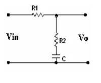

7.3.1: Title of the experiment: Frequency response of a lag network
7.3.2: Aim of the experiment: To determine frequency response of a lag
network.
7.3.3: List of equipments:
Sl no Item Specification Quantity
1) AFO 10 Hz-1MHz/15Vrms 1
2) C R O 0-20 MHz/80Vpp 1
3) Resistors 10. k 1
4) Capacitor 0.1 micro fara 1
7.3.4: Experimental Setup:

7.3.5: Theory:
The primary function of lag compensation is to provide attenuation in the high Frequency range to give a system sufficient phase margin. The phase lag characteristic is of no consequence in lag compensator. The lag compensators are low-pass filters therefore it permits a high gain at low Frequencies, which improves steady state & also improves phase margin. The improve in phase margin is due to reduction of gain in the higher critical range of frequencies. Since lag compensator tends to integrate the input signal it acts appropriately as proportional plus integral controller, because of this lag network becomes less stable.
7.3.6: Design equations:
The T.F for the lag N/W is given by
Vo(s) R2 + 1/sc
------ = --------------
Vi(s) R1 +R2 +1/sc
1 S+ (1/R2c)
= ---------- ( ------------------------------------------ )
R1+R2 S +(R1+R2) / R2 x R2C
----------
R2
Let τ = R2 C>0 and
R1+R2
β = ---------- >1
R2
Vo(s) 1 S + 1/ τ
------- = ----- ( ----------- )
Vi(s) β S + 1/ β τ
Also β = 1+sinQm
-------------
1-sinQm
Assume Qm = -450 τ =0.2msec C = 0.1 μF
Sin Qm= β-1
------
β+1
0.707 = β-1
------
β+1
β = 5.83
R1+R2
β = ----------
R2
2K + R1
5.83 = ----------
R2
R1 = 10 KΩ
τ 0.2 msec
R2 = ------ = ------------ = 2 KΩ
C 0.1 μF
1
λm = --------- = 330 Hz
2-Π√ β
Designed Values:
Fm=330Hz
β = 5.83
τ = 0.2m sec
Re = 2 KΩ
R1 =10 KΩ.
The input signal it acts appropriately as proportional plus integral controller .Because Of this lag N/w becomes less stable.
Since β >1 the steady state output has lagging phase angle with respect to the sinusoidal input & hence the name lag network
7.3.7: Procedure:
at varying input frequencies.
7.3.8: Table of observation:
Frequency response
Vin = 1Vpp (constant)
fin (Hz) |
Vout(volts) |
Phase(degrees) |
|
|
|
7.3.9: Specimen calculations: ---- Not required ------
7.3.10: Plotting of graph:
Gain Vs Frequency
Phase Vs Frequency
7.3.11: Conclusion:
The primary function of a lag compensator is to provide attenuation in the high frequency range to give a system sufficient phase margin. The phase lag characteristic is of no consequence in lag compensator. The lag compensators are low pass filters therefore it permits a high gain at low frequencies, which improves steady state and also improves phase margin. In the above expt, we can observe that β is a important parameter, and its value will decide the stability.